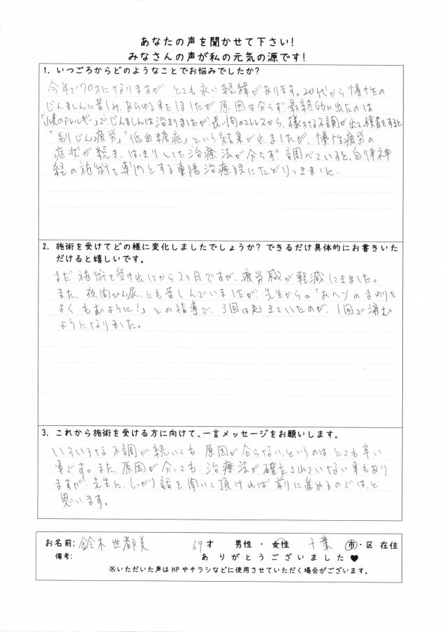
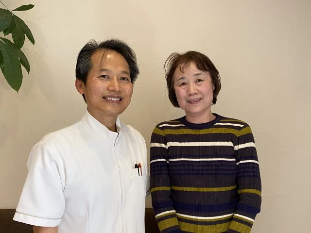
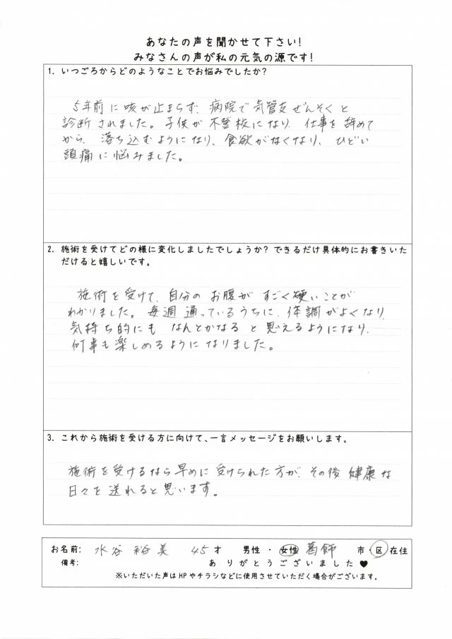
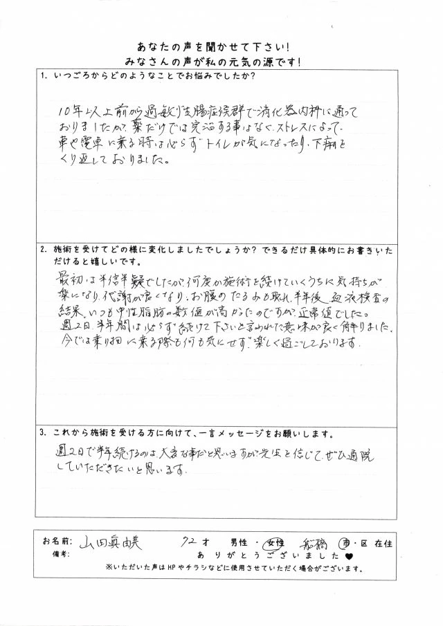

お客様の声
※お客様の感想であり、効果効能を保証するものではありません。

施術から2ヶ月後には疲労感が軽減し、
夜中にトイレで目覚める回数が減りました。
鈴木世都美様 千葉市 69歳 女性
今年で70才になりますが、とても永い経緯があります。
20代から慢性の蕁麻疹に苦しみ、あらゆる事をしましたが原因は分らず、最終的に出たのは「小麦のアレルギー」でした。
じんましんは治まりましたが、長い間のストレスから、様々な不調が出て検査をすると「副じん疲労」「低血糖症」という結果が出ました。
慢性疲労の症状が続き、はっきりとした対処法が分らず、調べていると自律神経の施術を専門とする東陽治療院に辿りつきました。
まだ施術を受け出しから2ヶ月ですが、疲労感が軽減できました。
また、夜間ひん尿にも苦しんでいましたが、先生からの「おヘソのまわりをよく揉むように!」との指導で、3回は起きていたのが、1回で済むようになりました。
以前より寝付きもだいぶよくなり、疲れやだるさが残らなくなりました。
いろいろな不調が続いても、原因が分らない、というのはとても辛い事です。
また、原因が分かっても対処法が確立されていない事もありますが、先生にしっかり話を聞いて頂ければ、前に進めるのではと思います。

週2回の施術で肩・首・背中の凝りが和らぎ、
胃の不快感も感じなくなりました。
富山律子様 柏市 67歳 女性
長年、寝付きが悪く、朝まで一睡もできない日もちょくちょく ありました。
それと急に食欲がなくなり、食べれない日が2週間以上続くことが何度かありました。
日に日に体重が減っていくので心配になり、胃カメラ、CT、MRI検査などしましたが、どこも異状なしでした。
その他、肩、首、背中の凝りが日常的にありました。
週2回の施術を2ヶ月ぐらい続けたころには、肩、首、背中の凝りがほぼなくなってました。
施術を受けて9ヶ月になりますが、常に膨らんでいた胃のあたりがへこんで不快感を感じなくなりました。食欲もあります。
以前より寝付きもだいぶよくなり、疲れやだるさが残らなくなりました。
なんとなく体調不良で悩んでいる方はぜひ、先生の施術を受けてみてください。
お腹のコリが和らぐと体が軽くなりすっきりしますよ。安心して通える院です。

施術を受けて徐々に体調が良くなり、
何事も楽しめるようになりました。
水谷裕美様 葛飾市 45歳 女性
5年前に咳が止まらず、病院で気管支喘息と診断されました。
子供が不登校になり、仕事を辞めてから落ち込むようになり、食欲がなくなり、ひどい頭痛に悩みました。
施術を受けて、自分のお腹がすごく硬いことがわかりました。
毎週通っているうちに体調が良くなり、気持ち的にもなんとかなると思えるようになり、何事も楽しめるようになりました。
施術を受けるなら早めに受けられた方が、その後、健康な日々を送れると思います。

施術を続けるうちにお腹の調子が良くなり、
車や電車に乗る際も不安がありません。
山田眞由美様 船橋市 72歳 女性
10年以上前から過敏性腸症候群で消化器内科に通っておりましたが、薬だけでは良くならず、ストレスによって車や電車に乗る時は必ずトイレが気になったり、下痢をくり返しておりました。
最初は半信半疑でしたが、何度か施術を続けていくうちに気持ちが楽になり、代謝が良くなり、お腹のたるみが取れました。
半年後、血液検査の結果、いつも中性脂肪の数値が高かったのですが、正常値でした。
週2日、半年間は必ず続けて下さいと言われた意味が良く解りました。今では乗り物に乗る際も何も気にせず、楽しく過ごしております。
週2日で半年続けるのは大変な事だと思いますが、先生を信じて、ぜひ通院していただきたいと思います。